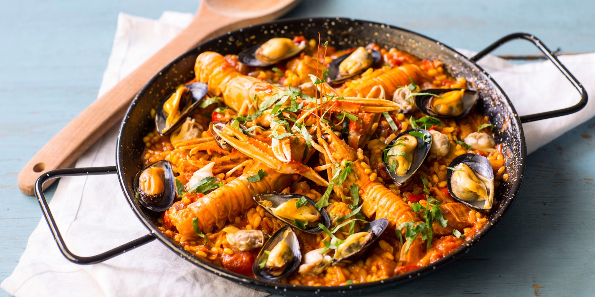

Paella Mixta

Ingredients
- Chicken broth
- Spanish saffron
- Smoked paprika
- Extra virgin olive oil
- Spanish chorizo
- Boneless skineless chicken thighs
- Onions
- Red bell peppers
- Tomatoes
- Bay leaves
- Green peas
- Garlic
- Bomba rice
- Large shrimp
- Mussels or clams
- Piquillo peppers
- Salt and pepper
- Parsley
Directions
- Prior to starting your paella, if using clams, soak the clams in salted water for a couple of hours to remove any sand. Discard any clams that do not close when you tap on them. Press together the shells of any mussels that are open. If the shell doesn't close, the mussel should be discarded (also toss any with broken shells).
- Heat stock, paprika and saffron in a large pot. Cover and keep warm.
- In a 15" paella pan, heat 2 tbsp of the olive oil, add the chorizo and cook for 2- 3 minutes over medium-high heat. Add the chicken pieces to the pan and cook turning once, until browned on both sides, about 5 minutes more. Remove chicken and chorizo pieces to a warm plate. Add the remaining olive oil to the pan and cook the onions and red peppers over medium heat until onions are translucent, about 5 minutes. Add the bay leaves, garlic, tomatoes with their juices and simmer for another 5 minutes until it becomes sauce-like. Add salt and pepper to taste.
- Pour in the rice and stir to combine with the tomato mixture (known as 'sofrito'). Add the peas, chicken and chorizo pieces. Slowly add all of the broth to the paella. Stir the rice mixture around until it is evenly distributed throughout the pan. Important - do not stir after this point.
- Simmer for about 10 minutes, then place the shrimp and shellfish into the mixture one-by-one, evenly distributing throughout and placing the shellfish so they open facing up. Simmer for another 15 minutes, or until all of the broth has been absorbed, adding extra liquid if necessary. Scatter with the piquillo pepper slices.
- Remove pan from the heat and cover with foil. Let sit 10 minutes. Discard any mussels or clams that did not open. Garnish with the parsley and lemon wedges. Serve with baguette and a crisp Spanish white or red wine!